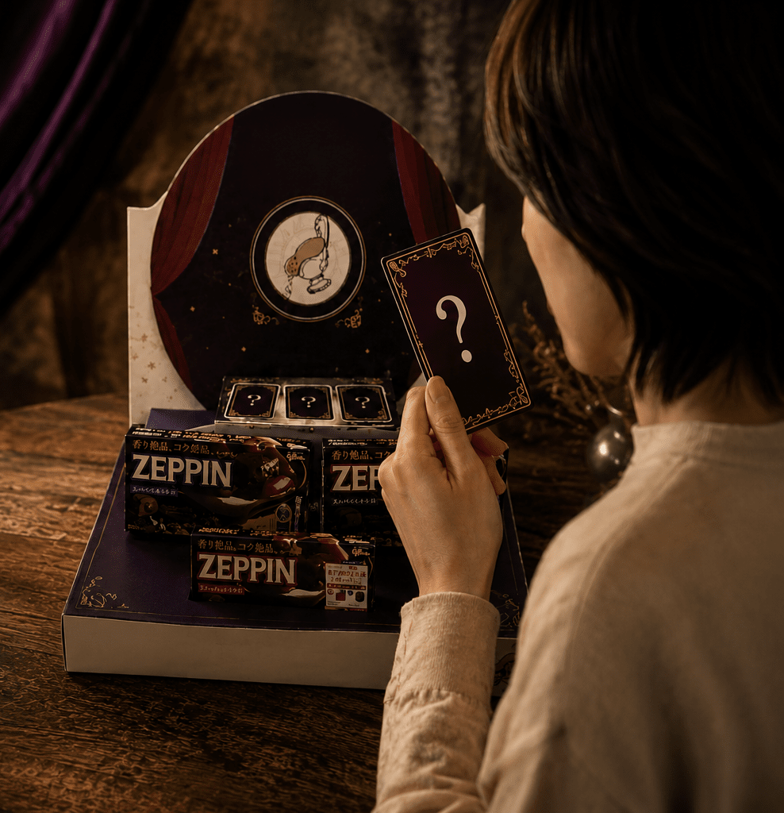

作品のポイント
目次
カード一覧
人の「香りによる感情の動き」に着目した体験型ディスプレイです。
- 甘口タロットカード
- 中辛タロットカード
- 辛口タロットカード
作品紹介

このディスプレイは3つの香り付きタロットカードがあるため、 それぞれの匂いを嗅いでタロット占いができます。
ZEPPINカレーをターゲットの40・50代の女性に手に取ってもらえるように、 タロットカードで占いができるディスプレイ 「スパイスに酔う 大人の香り占い」を考えました。
コンセプト
香りを感じて選ぶ体験で成り立つ参加型ディスプレイです。
嗅覚という人の特徴を生かし、視覚と香りの両面からスパイスの世界を楽しめる点が新しい展示です。
タロットカードを引くことで占いができ、今日のカレーを決めることができます。
あなたも今日の一皿を、タロットカードにゆだねて占ってみませんか？